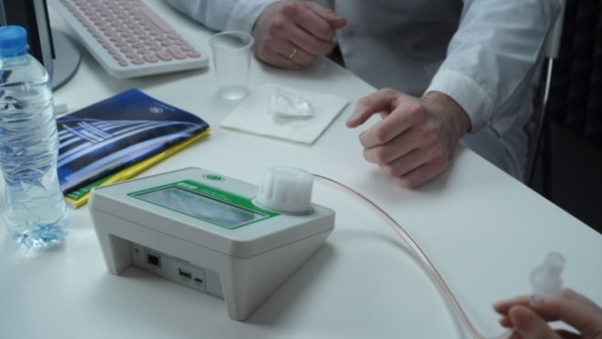
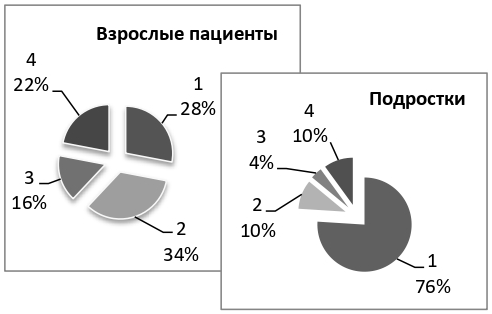
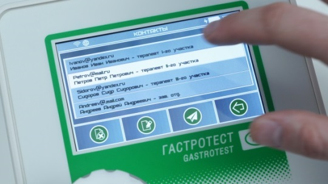
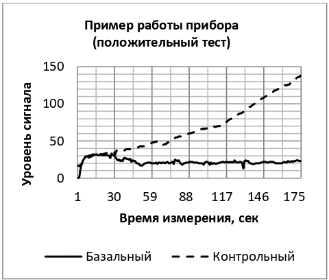

Контроль эффективности лечения хеликобактерных инфекций с помощью прибора "Гастротест"
В течении последних пяти лет уровни первичной заболеваемости болезнями органов пищеварения, согласно статистическим данным, представленным в формах ФСН №12, сохраняются стабильными. Основной вклад вносят заболеваемости, связанные с патологией верхних отделов ЖКТ (ГЭРБ, гастриты и дуодениты), которые, зачастую, принято ассоциировать с инфицированностью организма Helicobacter pylori (HP).
В настоящее время разработано большое число методов, позволяющих выявить инфекцию HP. Согласно рекомендациям Российского общества детских гастроэнтерологов, гепатологов и нутрициологов (2021 г.), методы следует разделять и группировать в соответствии с поставленными задачами. В данной статье описан прибор «ГастроТест». В основу прибора заложен дыхательный аммиачный тест (с мочевиной обычного изотопного состава), который входит в список рекомендованных для контроля эффективности терапии методов. Прибор предназначен для диагностики инфицирования человека бактерией HP по содержанию аммиака в выдыхаемом воздухе.
Принцип действия прибора основан на том, что бактерия HР в целях защиты от агрессивной среды желудка вырабатывает фермент уреазу, стимулирующую реакцию гидролиза мочевины желудочного сока, в результате которой образуются двуокись углерода, вода и аммиак. Аммиак является важным звеном для функционирования человеческого организма, избыток которого в основном выводится из организма человека через почки с мочой в виде мочевины и солей аммония. При этом его малая часть (не более 2ppm) может выделяться вместе с выдыхаемым воздухом. У здорового человека концентрация аммиака в выдыхаемом воздухе составляет 50-250 ppb. Отклонение от этого уровня может говорить о наличии таких заболеваний, как: почечная недостаточность, дисфункция печени, ГЭРБ, язвенная болезнь желудка, гастрит и т.п. При этом на его концентрацию способны оказывать влияние возраст, пол, пищевые привычки, физические нагрузки и т.п.
В 2021 году Научно-Техническое Предприятие «ТКА» (НТП «ТКА») зарегистрировало (регистрационное удостоверение на медицинское изделие РЗН 2021/13993 от 18.10.2021) и начало выпуск прибора «ГастроТест». Прибор является точным (чувствительность 95% и специфичность 92%), неинвазивным и простым в исполнении.
В начале 2021 года НТП «ТКА» совместно с медучреждениями Санкт-Петербурга провело сравнительные исследования двух методов (дыхательный аммиачный тест и гастроскопия). Исследования проводились в ГБУЗ городской поликлинике № 23 (Консультативно-диагностическом центре для детей № 2) и СПб ГБУЗ городском гериатрическом медико социальном центре. В исследовании приняло участие порядка 150 человек, из них около 50 подростков в возрасте до 15 лет и 100 человек в возрасте до 78 лет (взрослые пациенты). Гастроскопию проходили только пациенты с подозрением на возможные заболевания пищеварительной системы (для дополнительных сведений о состоянии здоровья пациента). После первичного обследования и гастроскопии пациентов разделили на несколько групп.
Взрослые пациенты были разделены на следующие группы: с диагнозом «Язвенная болезнь двенадцатиперстной кишки» (1), с диагнозом «Хронический антральный гастрит и дуоденит» (2), с диагнозом «ГЭРБ с недостаточностью кардии» (3) и без заболеваний (4).
Подростки были разделены на следующие группы: с диагнозом «Поверхностный гастрит» (1), с диагнозом «Гиперпластический гастрит» (2), с диагнозом «Эрозивный гастрит» (3) и без заболеваний (4).
Далее пациенты проходили обследование с помощью прибора «ГастроТест». Обследование каждого пациента занимало не более 15 мин.
В ходе дыхательной диагностики c помощью прибора «ГастроТест» у пациента сначала (в течение трех минут) измерялся базальный уровень аммиака. Прибор считывал значения сигнала поступающего с датчика каждую секунду в процессе измерения. Затем пациент принимал раствор карбамида нормального изотопного состава. На усвоение карбамида в желудке пациента отводилось пять минут. Далее у пациента измерялся контрольный (нагрузочный) уровень аммиака.
Результатом работы прибора является показатель инфицированности, выраженный в процентах. Показатель инфицированности – это показатель превышения содержания аммиака в выдыхаемом воздухе человека, измеренного после принятия раствора карбамида, к базальному содержанию аммиака в выдыхаемом воздухе человека. Согласно прибору «ГастроТест», пациент считается не инфицированным бактерией HР (отрицательный тест), если показатель инфицированности не превышает 20%.
Результаты, полученные с помощью прибора «ГастроТест», сравнивались с результатами первичного обследования и гастроскопии. В результате сравнения была установлена частота (процент) совпадения:
- Для взрослых пациентов:
- 90% (для положительных результатов),
- 92% (для отрицательных результатов).
- Для подростков
- 96% (для положительных результатов),
- 95% (для отрицательных результатов).
Исследования показали эффективность, как дыхательного аммиачного метода, так и прибора «ГастроТест». Специалисты, проводившие исследования, рекомендуют использовать прибор для контроля эффективности лечения хеликобактерной инфекции. Согласно рекомендациям контроль должен проводятся не ранее чем через 4 недели после окончания лечения.
При применении «Гастротест» реализуется приборное обеспечение системы оперативного, в том числе, мобильного, скрининга населения при первичной оценке состояния желудочно-кишечного тракта и создается техническое оснащение для обмена медицинских данных с устройства в направлении развития программы «Телемедицина».
Результаты исследований были частично представлены в докладе на 4-ом Российском гастроэнтерологическом конгрессе «Гастроэнтерология России от рождения до старости».
ПРИБОР «ГАСТРОТЕСТ» РАЗРАБОТАН ПРИ ФИНАНСОВОЙ ПОДДЕРЖКЕ ФОНДА СОДЕЙСТВИЯ ИННОВАЦИЯМ.